용접산업기사 (2009-05-10 기출문제)
1과목: 용접야금 및 용접설비제도
1. 피복 배합제의 성분에서 슬래그 생성제로 사용되는 것이 아닌 것은?
- 탄산바륨(BaCO3)
- 이산화망간(MO2)
- 석회석(CaCO3)
- 산회티탄(TiO2)
(정답률: 50%)

2. 탄소강의 물리적 성질 변화에서 탄소량의 증가에 따라 증가 되는 것은?
- 비중
- 열팽창계수
- 열전도도
- 전기저항
(정답률: 35%)
3. 일반적으로 열이 전달되기 쉬운 정도로 표시할 때 열전도율이 사용되고 있다. 용접 입열이 일정할 경우 냉각속도가 가장 느린 것은?
- 연강
- 스테인리스강
- 알리미늄
- 구리
(정답률: 50%)
4. 탄소강에 포함된 원소 중 실온에서 충격치를 저하시켜 상온취성의 원인이 되며 결정립을 조대화 시키는 것은?
- P
- S
- Mn
- Au
(정답률: 44%)
5. 일반적인 금속의 공통적인 특성 설명으로 틀린 것은?
- 이온화하면 양(+)이온이 된다.
- 열과 전기의 양도체이다.
- 전성과 연성이 좋다.
- 강도, 경도, 비중이 비교적 적다.
(정답률: 78%)
6. 동일 금속일 경우 재결정 온도가 낮아지는 원인과 가장 거리가 먼 것은?
- 가공도고 작을수록
- 가공시간이 길수록
- 금속의 순도가 높을수록
- 가공 전의 결정입자가 미세할수록
(정답률: 32%)
7. 2개 성분의 금속이 용해된 상태에서는 균일한 용액으로 되나 응고 후에는 성분 금속이 각각 결정이 되어 분리되며, 2개의 성분금속이 고용체를 만들지 않고 기계적으로 혼합될 수 있는 조직은?
- 공정조직
- 공석조직
- 포정조직
- 포석조직
(정답률: 44%)
8. 철강을 순철, 강, 주철로 분류할 경우 기준이 되는 것은?
- 황(S)함유량
- 탄소(C)함유량
- 망간(Mn)함유량
- 규소(Si)함유량
(정답률: 58%)
9. 금속의 열전도율이 큰 순서로 나열된 것은?
- Cu ＞ Ag ＞ Al ＞ Au
- Ag ＞ Cu ＞ Au ＞ Al
- Ag ＞ Al ＞ Au ＞ Cu
- Au ＞ Cu ＞ Ag ＞ Al
(정답률: 68%)
10. 주철의 용접이 곤란하고 어려운 이유에 대한 설명으로 틀린 것은?
- 주철은 연강에 비하여 여리며 주철의 급랭에 의한 백선화로 수축이 많아 균열이 생기기 쉽기 때문이다.
- 주철 속에 기름, 흙, 모래 등이 있는 경우에 용착이 불량하거나 모재와의 친화력이 나빠지기 때문이다.
- 일산화탄소 가스가 발생하여 용착 금속에 기공이 생기기 쉽기 때문이다.
- 크롬 탄화물이 결정입계에 석출하기 쉽기 때문이다.
(정답률: 36%)
11. KS 규격에서 평면형 평행 맞대기 이음 용접을 의미 하는 기호는?
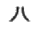
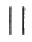
(정답률: 69%)
12. 특별한 도시 방법에서 도형 내의 특정한 부분이 평면이란 것을 표시할 필요가 있을 경우에 나타내는 표시 방법으로 가장 적합한 것은?
- 정사각형기호(□)를 사용한다.
- R 기호를 사용한다.
- P 기호를 사용한다.
- 가는 실선의 대각선을 긋는다.
(정답률: 46%)
13. 제3각법의 그림 기호 표시를 올바르게 나타낸 것은?
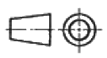
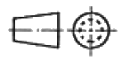
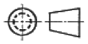
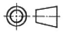
(정답률: 58%)
14. 정투상법의 제3각법에서 투상하여 보는 순서는?
- 눈 → 물체 → 투상면
- 눈 → 투상면 → 물체
- 물체 → 투상면 → 눈
- 물체 → 눈 → 투상면
(정답률: 62%)
15. 기계나 장치 등의 실체를 보고 프리핸드로 그린 도면은?
- 배치도
- 기초도
- 장치도
- 스케치도
(정답률: 79%)
16. 현장용접 보조기호 표시를 올바르게 표현한 것은?
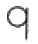
(정답률: 77%)
17. 도면의 분류에서 설명도의 용도로 가장 적합한 것은?
- 주문자 또는 기타 관계자의 승인을 얻기 위한 도면이다.
- 사용자에게 물품의 구조, 기능, 성능 등을 알려주기 위한 도면이다.
- 지역 내의 건물 위치나 공장 내부에 기계 등의 설치위치의 상세한 정보를 나타낸 도면이다.
- 견적 내용을 나타낸 도면이다.
(정답률: 67%)
18. 제도의 목적을 달성하기 위한 기본 요건으로 틀린 것은?
- 대상물의 도형이 있으면 필요로 하는 크기, 모양, 자세, 위치의 정보를 포함하지 않아야 한다.
- 애매한 해석이 생기지 않도록 표현상 명확한 뜻을 갖고 있어야 한다.
- 무역 및 기술의 국제 교류의 입장에서 국제성을 갖고 있어야 한다.
- 기술의 각 분야에 걸쳐 가능한 한 정확성, 보편성을 갖고 있어야 한다.
(정답률: 84%)
19. KS규격에서 용접부 및 용접부의 표면 형상 보조기호 설명으로 틀린 것은?
 : 평면(동일한 면으로 마감처리 함)
: 평면(동일한 면으로 마감처리 함) : 토우(끝단부)를 오목하게 함
: 토우(끝단부)를 오목하게 함 : 영구적인 이면 판재를 사용함
: 영구적인 이면 판재를 사용함 : 제거 가능한 이면 판재를 사용함
: 제거 가능한 이면 판재를 사용함
(정답률: 56%)
20. 선의 종류에 따른 용도 설명으로 틀린 것은?
- 외형선 : 대상물의 보이는 부분의 모양을 표시하는 선
- 지시선 : 기초, 기술 등을 표시하기 위하여 끌어내는데 쓰이는 선
- 파단선 : 그 절단 위치를 대응하는 그림에 표시하는 선
- 해칭 : 도형의 한정된 특정 부분을 다른 부분과 구별하는데 사용하는 선
(정답률: 42%)
2과목: 용접구조설계
21. 가접시 주의해햐 할 사항으로 틀린 것은?
- 본 용접자(者)와 동등한 기량을 갖는 용접자가 가접을 시행한다.
- 가접 위치는 부품의 끝 모서리나 각 등과 같이 응력이 집중되는 곳은 피한다.
- 본 용접과 같은 온도에서 예열을 한다.
- 용접봉은 본 용접 작업시에 사용하는 것보다 약간 굵은 것을 사용한다.
(정답률: 56%)
22. 용접부의 부근을 냉각시켜서 용접변형을 방지하는 냉각법의 종류에 해당 되지 않는 것은?
- 석면포 사용법
- 피닝법
- 살수법(撒水法)
- 수냉통판 사용법
(정답률: 85%)
23. 용접부 인장시험에서 최초의 길이가 40mm이고, 인장시험편의 파단 후의 거리가 50mm 일 경우에 변형율 ε는?
- 10%
- 15%
- 20%
- 25%
(정답률: 48%)
24. 일반적인 용접순서를 결정하는 유의사항 설명으로 틀린 것은?
- 용접 구조물이 조립되어 감에 따라 용접작업이 불가능한 곳이니 곤란한 경우가 생기지 않도록 한다.
- 용접물의 중심에 대하여 항상 대칭으로 용접을 해 나간다.
- 수축이 작은 이음을 먼저 용접하고 수축이 큰 이음(맞대기 등)은 나중에 용접한다.
- 용접 구조물의 중립축에 대하여 용접 수축력의 모멘트의 합이 0(英)이 되게 한다.
(정답률: 70%)
25. 판의 홈 용접에서 용접의 진행과 더불어 이동하는 열원의 전방 홈 간격이 열렸다 닫혔다 하는 현상으로 주로 열원 이동 중에 있어서 용융지 부근 모재의 용접선 방향에의 열팽창에 기인하여 생기는 용접변형은?
- 회전변형
- 세로 굽힘변형
- 팽창변형
- 비틀림변형
(정답률: 22%)
26. 본 용접하기 전에 적당한 예열을 함으로써 얻어지는 효과 설명으로 가장 적당한 것은?
- 예열을 하게 되면 용접성은 좋아지나 용접결함을 수반한다.
- 변형과 잔류 응력이 많이 발생한다.
- 용접부의 냉각속도를 느리게 하여 균열 발생이 적게 된다.
- 용접부의 냉각속도가 빨라지고 높은 온도에서 큰 영향을 받는다.
(정답률: 70%)
27. 용접 후처리에서 노치인성의 설명으로 옳은 것은?
- 수소량이 적어지면 연성의 저하가 심해지는 성질
- 용접 전, 굽힘 가공하여 용접부에 균열이 생기는 성질
- 강이 저온, 충격 하중 또는 노치의 응력 집중 등에 대하여 견딜 수 있는 성질
- 강이 고온 충격 하중 또는 노치의 응력 분산 등에 의해서 메지게 되는 성질
(정답률: 59%)
28. 두 부재 사이의 휨 부분을 용접하는 것으로 용접부 형상이 V형, X형, K형 등이 있는 용접은?
- 플러그 용접
- 슬롯 용접
- 플랜지 용접
- 플레어 용접
(정답률: 40%)
29. 응력 제거 풀림에 의해 얻어지는 효과에 해당 되지 않는 것은?
- 용접 잔류 응력이 제거된다.
- 응력 부식에 대한 저항력이 증대된다.
- 융착 금속 중의 수소제거에 의한 연성이 증대된다.
- 충격저항이 감소하고 크리프 강도가 향상된다.
(정답률: 37%)
30. 그림과 같이 폭 60mm 두께 12mm 강판을 60mm만을 겹쳐서 전둘레 필릿용접을 한다. 여기에 9000kgf의 하중을 작용시킨다면 필릿용접의 치수는 약 몇 mm 인가? (단, 용접의 허용응력은 1000 kgf/cm2 으로 한다.)
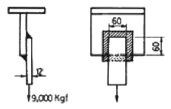
- 5.3
- 9.2
- 12.1
- 16.4
(정답률: 23%)
31. 계산 또는 필릿 용접의 치수 이상으로 표면 위에 용착된 금속은?
- 이면비드
- 덧붙이
- 개선 홈
- 용접의 루트
(정답률: 52%)
32. 용접 이음의 설계를 할 때의 주의 사항으로 틀린 것은?
- 용접작업에 지장을 주지 않도록 공간을 둔다.
- 용접 이음을 한쪽으로 집중되게 접근하여 설계하지 않도록 한다.
- 용접선은 될 수 있는 한 교차하도록 한다.
- 가능한 한 아래보기 용접을 많이 하도록 한다.
(정답률: 78%)
33. 아래 그림과 같은 필릿 용접부의 종류는?
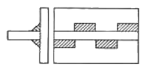
- 연속 병렬 필릿용접
- 연속 지그재그 필릿용접
- 단속 병렬 필릿용접
- 단속 지그재그 필릿용접
(정답률: 35%)
34. KS 규격에서 E4340 용접봉의 피복제의 계통으로 맞는 것은?
- 일미나이트계
- 고산화티탄계
- 저수소계
- 특수계
(정답률: 67%)
35. 맞대기 용접이음의 가접 또는 첫 층에서 보이는 세로균열의 일종으로 약 200℃ 이하의 저온에서 발생하는 균열은?
- 설퍼 균열
- 라미네이션 균열
- 루트 균열
- 헤어 균열
(정답률: 34%)
36. 맞대기 용접 이음에서 강판의 두께 6mm 이고 용접길이 200mm, 인장하중 6000kgf 작용시 용접 이음부에 발생하는 인장응력은 몇 kgf/mm2 인가?
- 4
- 5
- 6
- 7
(정답률: 62%)
37. 용접봉의 선택 기준으로 가장 거리가 먼 것은?
- 모재의 재질
- 제품의 형상
- 용접 자세
- 사용 보호구
(정답률: 70%)
38. 잔류 응력이 존재하는 용접구조물에 어떤 하중을 걸어 용접부를 약간 소성변형 시킨 다음 하중을 제거하면 잔류응력이 감소하는 현상을 이용하는 방법은?
- 국부 응력 제거법
- 저온 응력 완화법
- 피닝법
- 기계적 응력 완화법
(정답률: 67%)
39. 일반적인 용접변형 교정방법의 종류가 아닌 것은?
- 얇은 판에 대한 점 수축법
- 형재에 대한 직선 수축법
- 변형된 부위를 줄질하는 법
- 가열 후 해머링하는 법
(정답률: 60%)
40. 용접작업에서 지그 사용시 얻어지는 효과로 틀린 것은?
- 대량생산의 경우 용접 조립 작업을 단순화 시킨다.
- 제품의 마무리 정밀로를 향상시킨다.
- 용접 변형을 억제하고 적당한 역 변형을 주어 정밀도를 높인다.
- 용접작업은 용이하나 작업능률이 저하된다.
(정답률: 87%)
3과목: 용접일반 및 안전관리
41. 아크 용접 작업에서 전격의 방지대책으로 가장 거리가 먼 것은?
- 절연 홀더의 절연부분이 파손되면 즉시 교환할 것
- 접지선은 수도 배관에 할 것
- 용접작업을 중단 혹은 종료 시에는 즉시 스위치를 끊을 것
- 습기 있는 장갑, 작업복, 신발 등을 착용하고 용접작업을 하지 말 것
(정답률: 79%)
42. 냉간압접의 장점에 해당 되지 않는 것은?
- 접합부가 가공 경화된다.
- 접합부에 열영향이 없다.
- 압접기구가 간단하다.
- 접합부의 전기저항은 모재와 거의 비슷하다.
(정답률: 30%)
43. 피복 아크 용접봉에 사용하는 피복제의 주된 역할이 아닌 것은?
- 아크를 안정시킨다.
- 용착금속의 탈산(脫酸) 정련 작용을 한다.
- 용착 금속의 용적을 미세화하여 용착 효을을 낮춘다.
- 스패터의 발생을 적게 한다.
(정답률: 70%)
44. 탄산 가스 아크 용접에서 중독 및 질식사고의 원인이 되는 가스는?
- 수소(H2)
- 암모니아(NH3)
- 일산화탄소(CO)
- 아세틸렌(C2H2)
(정답률: 84%)
45. 본 용접 전 가접에서의 주의사항 설명으로 틀린 것은?
- 본 용접보다는 지름이 굵은 용접봉을 사용한다.
- 강도상 중요한 부분에는 가접을 피한다.
- 용접의 시점 및 종점이 되는 끝 부분은 가접을 피한다.
- 본 용접과 비슷한 기량을 가진 용접사에 의해 실시하는 것이 좋다.
(정답률: 78%)
46. 다음 보기 중 용접의 자동화에서 자동제어의 장점에 해당되는 사항으로만 조합한 것은?
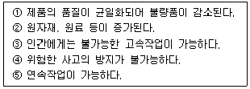
- ①, ②, ④
- ①, ③, ④
- ①, ③, ⑤
- ①, ②, ③, ④, ⑤
(정답률: 86%)
47. 서브머지드 아크용접 장치의 구성 및 종류에 관한 설명으로 틀린 것은?
- 용접 전류는 용접 전원으로부터 용접 전극을 통하여 공급된다.
- 용접 능률의 향상을 위해 2개 이상의 전극을 동시에 사용하는 다전극 용접기가 실용화 되고 있다.
- 용접전원으로는 직류가 시설비가 싸고 자기불림 현상이 매우 커서 많이 사용된다.
- 와이어 송급장치, 전압제어장치, 콘택드 조, 후락스 호퍼를 일괄하여 용접머리(welding head)라고 한다.
(정답률: 48%)
48. 용접부의 안전율을 나타낸 것으로 맞는 것은?
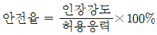
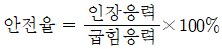
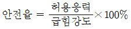
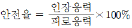
(정답률: 80%)
49. 용접기의 유지보수 및 점검시에 지켜야 할 사항으로 틀린 것은?
- 용접기는 습기나 먼지가 많은 곳은 가급적 설치를 하지 말아야 한다.
- 2차측 단자의 한쪽과 용접기 케이스는 접지를 확실히 해둔다.
- 탭 전환의 전기적 접속부는 자주 샌드페이퍼 등으로 잘 닦아 준다.
- 용접기는 어떤 부분에도 주유해서는 안 된다.
(정답률: 65%)
50. 용접법의 분류에서 압접, 단접, 전기저항 용접을 압접이라고 하는데, 아크용접, 가스용접 및 테르밋용접을 무엇이라 하는가?
- 가압접
- 에네르기법
- 열용접
- 융접
(정답률: 70%)
51. CO2 가스 아크 용접장치에 해당 되지 않는 것은?
- 용접 토치
- 보호가스 설비
- 제어 장치
- 플럭스 공급장치
(정답률: 48%)
52. 피복 아크 용접시 아크 쏠림 방지 대책이 아닌 것은?
- 용접봉 끝을 아크 쏠림 반대 방향으로 기울인다.
- 직류 용접으로 하지 말고 교류 용접으로 한다.
- 접지점은 될 수 있는 대로 용접부에서 멀리 한다.
- 긴 아크를 사용한다.
(정답률: 64%)
53. 피복 아크 용접에서 용접 전류가 너무 높거나 낮을 때 발생하는 용접 결함의 종류와 가장 거리가 먼 것은?
- 용입불량
- 선상조직
- 오버랩
- 언더컷
(정답률: 68%)
54. 아세틸렌 압력조정기의 구비조건 설명으로 틀린 것은?
- 가스의 방출량이 많아도 유량이 안정되어 있어야 한다.
- 조정압력은 용기 내의 가스량이 변해도 항상 일정해야 한다.
- 조정압력과 방출압력과의 차이가 클수록 좋다.
- 얼어붙지 않고 동작이 예민해야 한다.
(정답률: 75%)
55. 1차 압력이 30kWa인 피복 아크 용접기에서 전원 전압이 200V라면 퓨즈의 용량은 몇 A가 가장 적합한가?
- 75
- 100
- 150
- 300
(정답률: 60%)
56. KS 규격에서 E4324 용접봉의 피복제의 계통으로 맞는 것은?
- 저수소계
- 철분산화티탄계
- 특수계
- 일루미나이트계
(정답률: 58%)
57. 가스압접의 특징 설명으로 틀린 것은?
- 장치가 복잡하고 설비비, 보수비가 비싸다.
- 이음부에 탈탄층이 거의 없다.
- 작업이 거의 기계적이다.
- 용가재 및 용제가 필요 없다.
(정답률: 52%)
58. 가스용접시 팁 끝이 순간적으로 막히면 가스 분출이 나빠지고 토치의 가스 혼합실까지 불꽃이 그대로 전달되어 토치가 빨갛게 달구어지는 현상은?
- 역류
- 난류
- 인화
- 역화
(정답률: 22%)
59. 다음 설명에서 A, B 에 들어갈 값으로 맞는 것은?
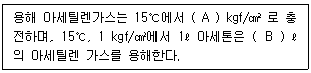
- A = 1.5, B = 10
- A = 25, B = 35
- A = 15, B = 25
- A = 10, B = 15
(정답률: 43%)
60. 접합할 모재를 용융시키지 않고 모재보다 용융점이 낮은 금속을 사용하여 두 모재 간의 모세관 현상을 이용하여 금속을 접합하는 것은?
- 특수용접
- 납땜
- 아크용접
- 압접
(정답률: 59%)